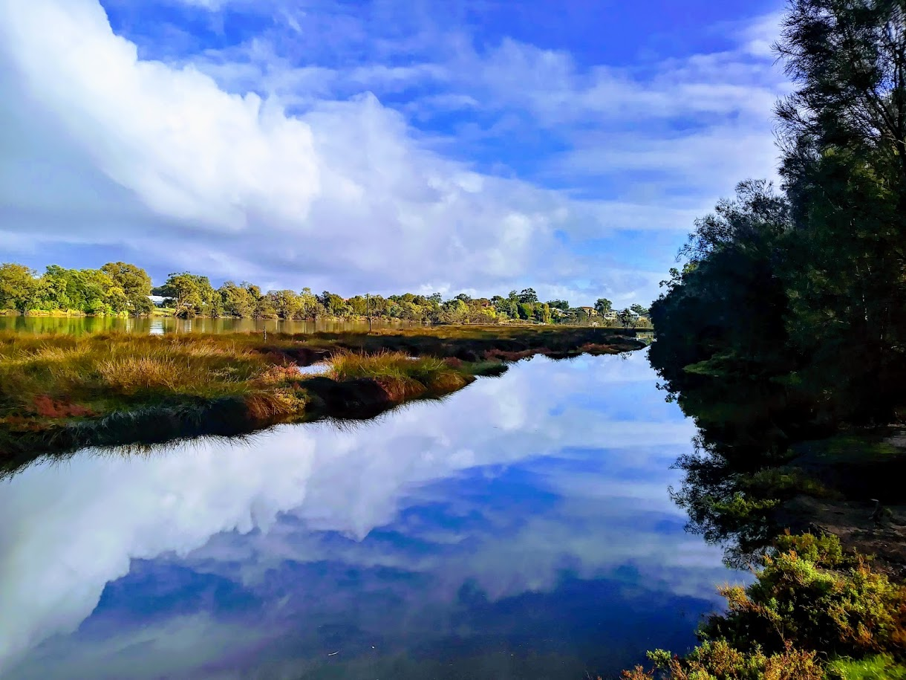

Weekend Fun Times
Eleanor's idea of a good weekend in Perth

After living in remote and regional Australia for
five and a half years, Eleanor is back in a city large
for a full-time symphony orchestra, and loving it.
Here are some of my favourite things to do: